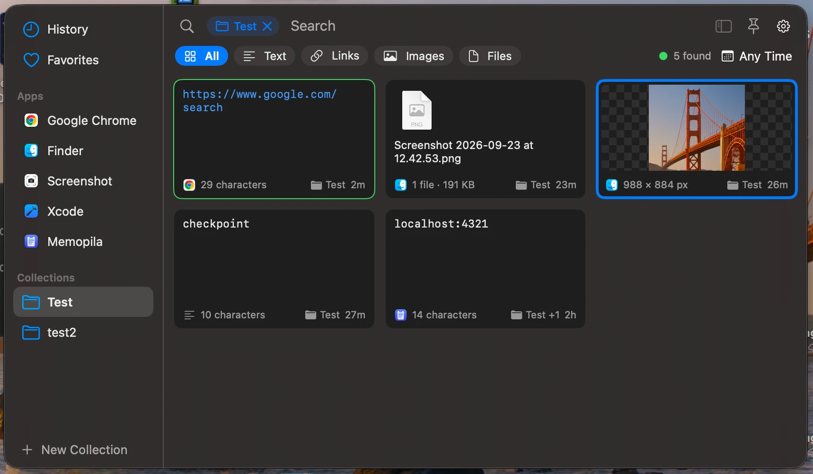

Search everything
Search covers text, titles, text inside images, app names, source pages and file names, with matches marked on the cards. Filter by kind, period, app or collection.
Everything you copy, searchable and editable, and kept on your Mac.
A native macOS clipboard manager in your menu bar. Press ⌥ ⌘ V, find what you copied, press ↩, and you are back in your app with the record on the clipboard.

Features
Memopila records text, rich text, links, images, PDFs, colours and files, and stores the history on disk so it stays light on memory. It then helps you find, fix and reuse what you copied.
Search covers text, titles, text inside images, app names, source pages and file names, with matches marked on the cards. Filter by kind, period, app or collection.
Edit formatted text without losing its formatting. You also get syntax highlighting and line numbers for code, HEX / RGB / HSL for colours, Quick Look for files, and a Changes… view before you save.
Screenshots become searchable: text is recognized on your Mac with Vision. Copy the selected text or all of it as a new card.
Set Don't save, Delete after, a size limit, text recognition, source page or format rules for any app, two clicks away from any card.
A red Current — not saved card explains why a copy was too large, unsupported or failed, and offers Save Anyway or a quick fix.
Keep what matters: favorites are never deleted automatically. Drop cards on a collection, give records titles, and drag cards into other apps.
Get plain text, trimmed, re-cased or sorted lines, formatted or minified JSON, and URL or Base64 encoded or decoded text. Each result becomes a new card.
Pause capture for 5 minutes, 15 minutes, an hour or until you resume, or skip just the next copy. Content copied meanwhile is never read.
Use the full keyboard map, the ⌘ K actions panel and ⌘ 1…9. Optionally, Memopila can paste into the app you were in. Available in English and Russian.
Keyboard
The panel opens over any app, even in full screen, without taking focus from it. Start typing to search, move with the arrows, and press ↩.
Press ⌘ / in the panel for the full list. The panel shortcut can be changed in Settings; only one app can hold ⌥ ⌘ V.
Privacy
Your clipboard holds passwords, tokens and private notes, so Memopila keeps the history on your Mac and never goes online.
History is stored locally but is not encrypted by the app. Use FileVault to protect the disk.
Per-app Don't save identifies the source app by a self-reported marker or the frontmost app. It is a convenience filter, not a security boundary. For one-off secrets use Pause or Skip next copy.
No account, sync or cloud. History stays in ~/Library/Application Support/Memopila. There are no link previews and no analytics.
Text recognition on device. Text in images is read with Apple's Vision framework on your Mac.
Password managers respected. Copies marked as concealed, transient or auto-generated are never saved.
Secrets expire. Tokens, private keys, JWTs and card numbers are recognized on your Mac. By default they are masked on the card and deleted after 8 hours, or you can choose not to save them at all. Detection is pattern-based and cannot catch everything.
Pause and Skip mean it. What you copy while capture is paused or skipped is never read.
Minimal permissions. Clipboard access is needed to capture. Accessibility is optional, only to paste for you. You can ignore content from your other devices.
Requirements and install
Download the latest release, move it to Applications and allow clipboard access. Builds without a Developer ID signature need one extra step on first launch.
Open the app once and click Done when macOS blocks it, then click Open Anyway in System Settings → Privacy & Security. Or, before the first launch, run:
xattr -dr com.apple.quarantine /Applications/Memopila.appAfter an update you may need to allow clipboard access again.